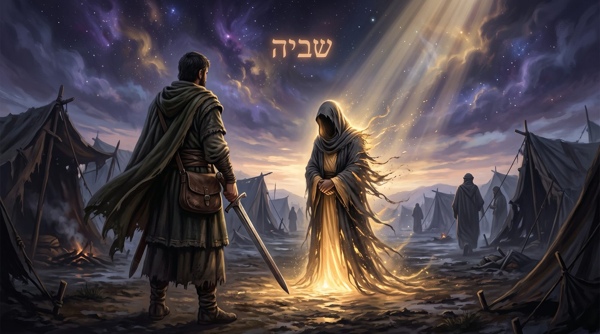
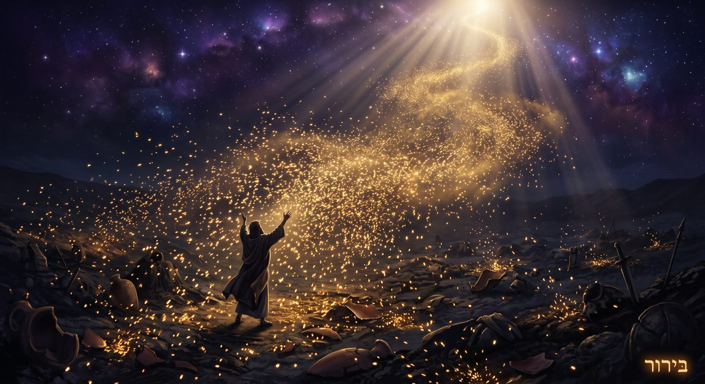
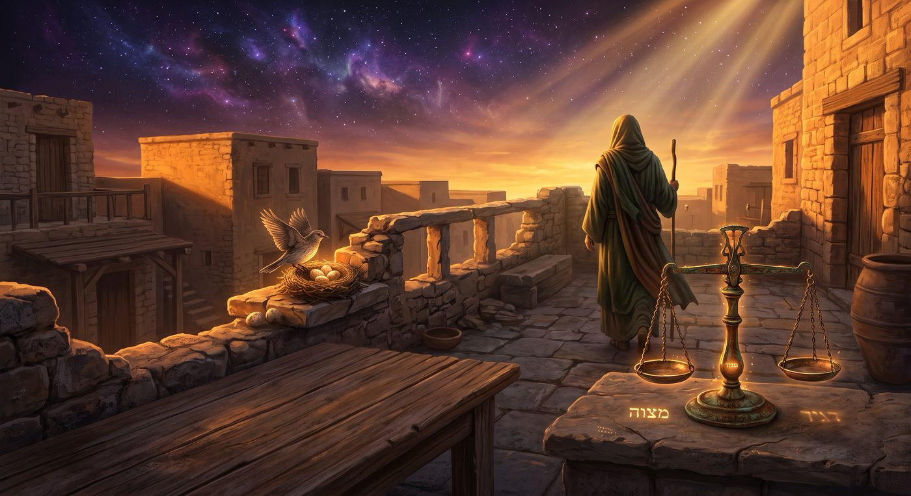
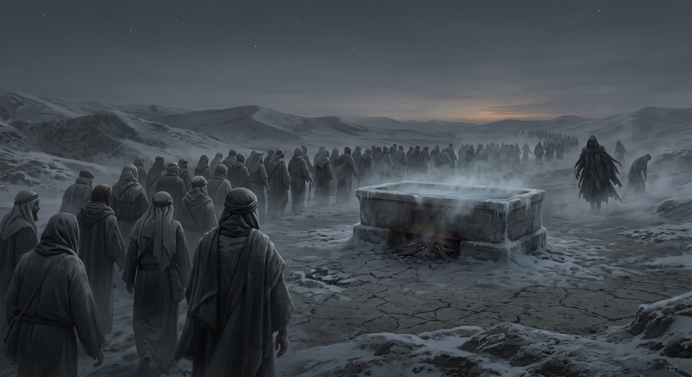

Sortir, c'est descendre pour remonter
Une paracha qui s'ouvre sur une guerre au-dehors et se referme sur Amalek, avec entre les deux le plus grand nombre de mitsvot de toute la Torah. Enquête sur un combat dont le vrai butin n'est pas la mort de l'ennemi mais la capture de ce qu'il retient, et sur une descente qui est la seule montée.
La paracha s'ouvre sur un ordre de guerre : כִּי תֵצֵא לַמִּלְחָמָה עַל אֹיְבֶיךָ (Devarim 21:10), « quand tu sortiras en guerre contre tes ennemis ». Le mot אֹיְבֶיךָ (oyveikha), tes ennemis, est au pluriel. On s'attend à ce que la suite parle d'armées, de villes, de peuples. La suite du verset fait autre chose. וּנְתָנוֹ ה' אֱ-לֹהֶיךָ בְּיָדֶךָ, « et Hachem ton D.ieu le livrera entre tes mains » : וּנְתָנוֹ (ounetano), le livrera, est au singulier. Un homme part contre des ennemis au pluriel, et ce qui lui est livré est un ennemi au singulier.
Nos maîtres se sont arrêtés sur ce glissement. La guerre commence contre une multitude et se résout contre un seul. C'est le signe qu'un ennemi se tient derrière tous les autres, et que le vaincre, c'est les vaincre tous. Le Zohar et la 'Hassidout ont lu ce singulier comme le yetzer hara, le mauvais penchant : l'unique adversaire qui prend mille visages, l'homme qui croit combattre au-dehors et découvre qu'il n'a jamais eu qu'un seul front, en lui.
Le troisième mot de la fin du verset achève de renverser la scène. וְשָׁבִיתָ שִׁבְיוֹ (vechavita chivyo), « et tu captureras sa captive ». Le but de cette guerre est énoncé comme une prise. On ne part pas anéantir l'ennemi, on part lui reprendre ce qu'il détient. Le mot שְׁבִי (chevi), le captif, dit une chose retenue prisonnière chez l'autre, une chose qui n'appartient pas à l'ennemi et qu'il faut ramener. La Torah pose dès sa première phrase que cette guerre a un objet précis : libérer quelque chose que l'ennemi garde.
Et le verbe qui ouvre tout, תֵצֵא (tetsé), « tu sortiras », sonne comme une élévation. Sortir, s'avancer, monter au combat. Le vocabulaire de la 'Hassidout entend l'inverse. Sortir en guerre, pour l'âme, c'est descendre : quitter les hauteurs où elle était pure pour entrer dans un monde qui la retient, un corps, une matière, une vie de détails. La guerre de Ki Tetsé se livre en bas.
Nos maîtres ont relevé que trois ordres attendaient Israël à l'entrée en terre : établir un roi, effacer Amalek, bâtir le Beit HaMikdach (traité Sanhédrin 20b). Ki Tetsé les porte déjà en germe. La guerre du singulier ouvre la paracha, Amalek la referme, et entre les deux se déploie tout ce qui fait une vie sainte en ce monde. Sortir en guerre déborde de loin l'épisode militaire : c'est le cadre de toute l'existence de l'homme sur terre.
Avec l'aide du Ciel et de nos maîtres, nous verrons que cette guerre n'a jamais eu d'ennemi extérieur ; que ce que l'homme part reprendre à l'ennemi, ce sont des étincelles de sainteté que la matière tient captives ; pourquoi la paracha qui décrit ce combat porte plus de mitsvot du quotidien qu'aucune autre ; comment la plus haute montée passe par la plus basse descente ; et pourquoi, à la fin, un seul ennemi ne se rachète pas et doit s'effacer, Amalek, celui du froid et du hasard.
• Sortir en guerre : l'ennemi au singulier
• Sortir reprendre la belle captive
• Sortir trier : le birour, le vrai butin
• Sortir au quotidien : les 74 lois du champ de bataille
• Sortir pour remonter
• Amalek, l'ennemi dont rien ne sort
• Le keli de celui qui sort
• Conclusion : la dernière sortie
La première loi qui suit l'ouverture est parmi les plus troublantes de la Torah. וְרָאִיתָ בַּשִּׁבְיָה אֵשֶׁת יְפַת תֹּאַר וְחָשַׁקְתָּ בָהּ (Devarim 21:11), « et tu verras dans la captivité une femme de belle apparence, et tu la désireras ». La Torah encadre alors un désir de guerre : le combattant peut prendre cette femme, à condition d'un long protocole, un mois de deuil, la tête rasée, les habits de la captivité ôtés. La loi de la יְפַת תֹּאַר (yefat toar), la belle captive.
Rachi ne cache pas le scandale. לֹא דִבְּרָה תוֹרָה אֶלָּא כְּנֶגֶד יֵצֶר הָרָע, « la Torah n'a parlé qu'en face du mauvais penchant » (Rachi sur ce verset, d'après le traité Kiddouchin 21b) : si la Torah ne permettait pas cette femme dans un cadre, l'homme la prendrait de toute façon dans l'interdit. La loi est une concession au yetzer, une manière de canaliser une pulsion qu'on ne peut pas simplement éteindre. Sur le plan simple, c'est déjà un enseignement : on ne gagne pas contre le penchant en le niant, on gagne en lui donnant une forme.
Rachi prolonge la mise en garde. Si l'homme l'épouse mal, סוֹפוֹ לִהְיוֹת שׂוֹנְאָהּ, « il finira par la haïr », et de cette union ratée naîtra un בֵּן סוֹרֵר וּמוֹרֶה (ben sorer oumoré), un fils rebelle. C'est pourquoi la Torah accole ces trois passages : la belle captive, la femme haïe, le fils rebelle. Une descente menée jusqu'au bout relève une étincelle ; une descente qui s'arrête à la consommation engendre une haine, puis un enfant perdu. Le même désir ouvre les deux chemins, et tout se joue dans ce que le combattant fait de la captive une fois qu'il l'a vue.
Les maîtres de la mystique ont lu la scène à un autre étage. Le Ari Z"L, et à sa suite toute la 'Hassidout, entend la בַּשִּׁבְיָה, « dans la captivité », comme le lieu où se trouve une chose sainte prisonnière. La belle captive n'est pas seulement une femme prise à l'ennemi. Elle est l'image d'une étincelle de sainteté tombée chez l'ennemi, retenue dans la matière, et que le combattant, en descendant faire la guerre, aperçoit et ramène chez lui. וְרָאִיתָ, « tu verras » : le premier acte de cette guerre est un regard qui reconnaît, sous les habits de la captivité, une beauté qui ne vient pas de là.
C'est pourquoi la Torah demande de la faire entrer dans la maison, de raser ce qui l'ornait, d'ôter le vêtement de sa captivité. וְהֵסִירָה אֶת שִׂמְלַת שִׁבְיָהּ מֵעָלֶיהָ (21:13), « et elle ôtera de sur elle le vêtement de sa captivité ». L'étincelle ne se rachète pas en gardant l'habit de l'endroit d'où on la tire. Il faut la dépouiller de ce qui l'attachait à l'ennemi pour qu'apparaisse ce qu'elle est vraiment. Le travail du combattant tient dans un geste, dévêtir : retirer à la chose désirée l'enveloppe qui la faisait passer pour étrangère, jusqu'à ce que reste seulement la lumière qu'elle cachait.

La première guerre de la Torah ne s'ouvre pas sur un ennemi à tuer, mais sur une captive à reconnaître : une lumière que la matière retenait, et qu'un regard vient dévêtir.
Pour comprendre pourquoi une étincelle sainte peut se trouver captive chez l'ennemi, il faut un détour par un mécanisme mystique. Le Ari Z"L ouvre le Etz Haim sur un récit de commencement. Avant que le monde tienne, une lumière trop forte fut versée dans des récipients trop faibles, et les récipients se brisèrent. C'est la שְׁבִירַת הַכֵּלִים (chevirat hakelim), la brisure des vases. De cette brisure, des éclats de lumière se dispersèrent et tombèrent, jusque dans les régions les plus basses, jusque dans la matière et dans ce qui s'oppose à la sainteté. Chaque éclat est un נִיצוֹץ (nitsots), une étincelle, prisonnière de l'écorce qui l'a recueillie.
Le Ari Z"L va jusqu'à les chiffrer : רפ״ח נִיצוֹצִין (rapa'h nitsotsin), deux cent quatre-vingt-huit étincelles tombées à la brisure, dispersées dans toute la création, attendant chacune sa remontée. Le Baal Chem Tov en a tiré une voie entière, la עֲבוֹדָה בְּגַשְׁמִיּוּת (avoda begachmiyout), le service par le matériel : manger, travailler, marcher, à condition de le faire pour relever l'étincelle que cachent l'aliment, l'outil, le chemin. Le tri se fait les mains dans la matière, sur chaque chose que l'on touche, loin de toute retraite qui fuirait le monde.
Toutes les écorces ne se valent pas. Les mystiques en distinguent plusieurs. Il existe une écorce intermédiaire, קְלִיפַּת נֹגַהּ (klipat noga), l'écorce de lueur, qui renferme des étincelles relevables ; et il existe des écorces entièrement obscures, sans aucune étincelle à en tirer. La belle captive vient de la première : sous son habit, une lueur attend d'être dévêtue. Le tri ne s'exerce que là où reste une lueur à extraire. Cette frontière expliquera, plus loin, pourquoi un seul ennemi de la paracha échappe au tri et doit être effacé.
Le monde, depuis, est un champ d'étincelles éparpillées. Et la tâche de l'homme a un nom : בֵּרוּר (birour), le tri, le triage. Relever chaque étincelle de là où elle est tombée, la séparer de l'écorce qui la retient, la faire remonter vers sa source. Nous avions rencontré ce mot il y a quelques semaines, dans Réé, quand nous cherchions ce que l'homme ajoute au monde par ses actes. La réponse était déjà là : il trie. Ki Tetsé donne à ce tri son visage de guerre.
Car la guerre de la paracha est exactement cela. וְשָׁבִיתָ שִׁבְיוֹ, « tu captureras sa captive » : le butin de cette guerre est l'étincelle que l'ennemi tenait captive. On descend au combat pour reprendre à l'écorce ce qui, en elle, ne lui appartient pas. L'ennemi n'a jamais rien possédé en propre. Il ne détenait qu'un bien volé, une lumière captive, et toute la guerre consiste à la lui reprendre. Quand l'étincelle remonte, l'écorce n'a plus de quoi vivre : elle ne tenait debout que par la lumière qu'elle emprisonnait.
Ceci change entièrement le sens du mot ennemi. Dans cette lecture, l'ennemi est un geôlier, et sa force lui vient tout entière du prisonnier qu'il retient. Le vaincre ne veut pas dire l'écraser, cela veut dire lui ouvrir la main. Et le combattant le plus efficace est celui qui voit le mieux : celui qui reconnaît, dans ce qui l'attire au plus bas, une étincelle à relever plutôt qu'une proie à consommer.

Le monde est un champ d'étincelles tombées, et chaqu'écorce n'a de force que la lumière qu'elle retient : faire la guerre, ici, c'est trier, et vaincre, c'est délivrer.
Il y a une donnée statistique de Ki Tetsé que l'on cite souvent sans forcément en tirer la leçon. Aucune paracha de la Torah ne contient autant de mitsvot que celle-ci : les décompteurs en relèvent environ soixante-quatorze. Et l'écrasante majorité ne parle ni de guerre, ni de mystique, ni de grands principes. Elles parlent de choses simples, du garde-corps qu'on pose sur un toit, du nid d'oiseau qu'on croise en chemin, de l'habit qu'on ne tisse pas de deux matières (lin et laine), du salaire qu'on ne retient pas jusqu'au lendemain, de la nécessité de peser de manière juste pour ne pas arnaquer l'autre. Le quotidien le plus terre à terre.
La question se pose d'elle-même. Pourquoi la paracha qui décrit la guerre de l'âme, sa descente et le tri des étincelles, est-elle précisément celle qui accumule le plus de lois minuscules du quotidien ? La réponse tient dans la lecture précédente. Si la guerre est un tri d'étincelles, alors le champ de bataille se trouve dans chaque détail matériel où une étincelle attend. Le toit, l'oiseau, le poids, l'habit sont autant de fronts. Chaque objet du monde retient une lumière, et chaque mitsva est la manière juste de la relever de cet objet-là.
Prenons la loi qui suit de près l'ouverture. כִּי יִקָּרֵא קַן צִפּוֹר לְפָנֶיךָ בַּדֶּרֶךְ (Devarim 22:6), « quand se rencontrera un nid d'oiseau devant toi sur le chemin » : on ne prend pas la mère avec ses petits, on renvoie la mère et on prend les petits. Et la promesse attachée semble démesurée : לְמַעַן יִיטַב לָךְ וְהַאֲרַכְתָּ יָמִים (22:7), « afin que tu prospères et que tu prolonges tes jours ». C'est la même récompense, mot pour mot, que celle du respect des parents. Le geste le plus petit ouvre la porte la plus grande, parce que l'étincelle qui attend dans ce nid n'est pas plus petite que celle qui attend ailleurs.
Voilà pourquoi la paracha de la guerre est la paracha des détails. Un homme qui rêve de grands combats et néglige le poids dans sa bourse s'est trompé de front. La sainteté ne se joue pas dans une bataille lointaine, elle se joue dans le garde-corps qu'il pose, dans le salaire qu'il paie à l'heure, dans l'oiseau qu'il renvoie. Chaque loi du quotidien est une étincelle nommée, et l'ensemble de ces lois dessine la carte complète du champ où l'âme, descendue, fait son tri.
La Torah présente d'ailleurs ces lois avec un ordre spécifique rempli de sens. Elle pose les poids justes, אֶבֶן שְׁלֵמָה וָצֶדֶק (even chleima vatsedek), la pierre pleine et juste, et enchaîne aussitôt sur le souvenir d'Amalek. Rachi lit le lien : celui qui triche sur ses poids, qu'il craigne l'ennemi. Un gramme volé dans une balance ouvre une brèche où Amalek, l'ennemi, entre. Et le garde-corps, מַעֲקֶה (maaké), qu'on pose sur son toit pour qu'un homme n'en tombe pas, enseigne la même chose dans l'autre sens : chaque détail matériel engage une vie, la sienne et celle d'autrui. Le champ de bataille est fait de gestes de cette taille.
Deux mitsvot voisines disent le combat en toutes lettres. לֹא תִרְאֶה אֶת שׁוֹר אָחִיךָ נִדָּחִים וְהִתְעַלַּמְתָּ (Devarim 22:1), « tu ne verras pas le bœuf de ton frère égaré en te détournant » : ce qui s'est perdu, tu le ramènes, לֹא תוּכַל לְהִתְעַלֵּם, « tu ne peux pas rester indifférent ». Et juste après : לֹא תִרְאֶה אֶת חֲמוֹר אָחִיךָ נֹפְלִים בַּדֶּרֶךְ (22:4), « tu ne verras pas l'âne de ton frère tombé sur le chemin », הָקֵם תָּקִים עִמּוֹ, « tu le relèveras absolument, avec lui ». Relever ce qui gît sur la route : la Torah a fait du birour une loi civile. L'étincelle égarée, l'objet perdu, la bête à terre sont la même image sous trois habits. On descend, on voit ce qui est tombé, on relève.

La paracha de la guerre est celle qui porte le plus de lois du quotidien parce que le champ de bataille est le quotidien : chaque détail matériel retient une étincelle, et chaque mitsva est la façon juste de la relever.
Pourquoi, au fond, une descente ? Si l'âme est haute et pure, pourquoi la faire tomber dans un monde qui la retiendra, la fatiguera, la mettra en danger de se perdre ? La 'Hassidout a fait de cette question le cœur de sa pensée, et elle répond par un principe : יְרִידָה צוֹרֶךְ עֲלִיָּה (yerida tsorekh aliya), la descente est la condition de la montée.
L'idée est contre-intuitive. On imagine que le progrès est une ascension continue, qu'on monte de degré en degré sans jamais reculer. La 'Hassidout enseigne que les vraies montées commencent par une chute. Une graine ne germe qu'après avoir pourri en terre. Un homme qui veut sauter plus haut plie d'abord les genoux et descend. L'âme qui veut atteindre un niveau qu'elle n'aurait jamais touché en restant en haut doit d'abord descendre au plus bas, là où gisent les étincelles que personne d'autre ne peut relever qu'elle, et remonter en les emportant.
Le Sfat Emet lit toute la paracha dans cette clé. Sortir en guerre, pour lui, c'est le mouvement même de l'âme qui accepte de quitter sa clarté pour entrer dans l'obscurité de la matière, non pour s'y perdre mais pour y travailler. Ce que l'âme rapporte de cette descente, elle ne l'aurait jamais possédé en restant en haut. La lumière qu'elle relève d'en bas, elle l'a gagnée par son propre effort, et c'est cet effort qui la lui rend pleinement sienne. C'est le prolongement direct de ce que nous disions à Vaet'hanan sur le récipient : on ne devient un vase capable de contenir qu'en s'étant creusé, et l'âme ne se creuse qu'en descendant.
L'histoire d'Israël est faite de ces descentes. Yossef descend en Égypte, vendu puis emprisonné, et c'est de sa chute que sort le salut de ses frères. Yehouda descend chez Tamar, Ruth la Moabite remonte d'un peuple dont l'entrée était fermée, et de ces unions que tout semblait condamner naît la lignée de David, puis celle du Machia'h. La belle captive appartient à la même série : une lumière tirée d'un lieu où on ne l'attendait pas. Les plus hautes remontées de l'histoire sainte ont toutes commencé par une descente que la raison réprouvait.
C'est pourquoi la loi de la belle captive s'ouvre sur un désir, וְחָשַׁקְתָּ בָהּ, « tu la désireras », et non sur un dégoût. Le combattant descend là où quelque chose l'attire. L'attirance vers le bas n'est pas, en soi, l'ennemi. Elle est le fil qui mène à l'étincelle. Le danger commence à la consommation, quand on prend la chose pour soi au lieu de la relever. Toute la sagesse du combat tient dans cet écart : sentir l'attirance, descendre par elle jusqu'à la chose, et là, au lieu de la prendre pour soi, la dévêtir de son écorce et la faire monter.
On ne monte qu'en descendant, et l'âme ne devient un vrai récipient qu'en s'étant creusée en bas : la lumière qu'elle relève de la matière devient sienne comme jamais ne l'est celle qu'elle recevrait d'en haut.
Si toute la paracha enseigne que l'ennemi est un geôlier dont on délivre l'étincelle, sa dernière page pose une exception qui l'éclaire. זָכוֹר אֵת אֲשֶׁר עָשָׂה לְךָ עֲמָלֵק (Devarim 25:17), « souviens-toi de ce que t'a fait Amalek ». Et la conclusion ordonne, cette fois, de l'effacer : תִּמְחֶה אֶת זֵכֶר עֲמָלֵק מִתַּחַת הַשָּׁמָיִם (25:19), « tu effaceras le souvenir d'Amalek de sous les cieux ». Certaines écorces se trient, celle-ci se détruit.
Pourquoi celle-là ? Le verset donne l'indice dans un seul mot. אֲשֶׁר קָרְךָ בַּדֶּרֶךְ (25:18), « qui t'a rencontré en chemin ». Rachi ouvre le mot קָרְךָ (karekha) sur plusieurs sens, et deux nous concernent. Le premier : לְשׁוֹן מִקְרֶה (lechon mikré), une langue de hasard. Amalek est le peuple qui traite tout comme un hasard, qui a croisé Israël « par accident » et en a fait sa doctrine : rien n'est providence, tout est rencontre fortuite. C'est l'exact contraire de ce que nous apprenions la semaine dernière dans Choftim, où être tamim voulait dire tenir l'avenir pour tenu par le Ciel et non par le sort. Amalek est le tamim inversé : le monde du מִקְרֶה, du pur hasard.
Le second sens de Rachi va plus loin encore. לְשׁוֹן קֹר וְחֹם (lechon kor va'hom), une langue de froid et de chaud : צִנֶּנְךָ וְהִפְשִׁירְךָ מֵרְתִיחָתְךָ, « il t'a refroidi, il a tiédi ton bouillonnement ». Rachi donne l'image d'un bain brûlant où personne n'ose entrer, jusqu'à ce qu'un vaurien y saute : il se brûle, mais désormais l'eau paraît moins chaude aux autres. Israël sortait d'Égypte enflammé, redouté de tous ; Amalek a sauté dans le bain, s'est brûlé, et a montré aux nations qu'on pouvait s'y risquer. Amalek est le froid : la puissance qui refroidit la ferveur, qui rend tiède ce qui brûlait, qui installe le doute là où il y avait le feu.
L'attaque a un lieu et une cause. Israël campe à רְפִידִים (Refidim), et nos maîtres lisent le nom : רָפוּ יְדֵיהֶם מִן הַתּוֹרָה (rafou yedeihem min haTorah), leurs mains se sont relâchées de la Torah. Juste avant, le peuple avait demandé הֲיֵשׁ ה' בְּקִרְבֵּנוּ אִם אָיִן, « Hachem est-il parmi nous, ou non ? » Le doute s'ouvre, et c'est dans cette faille exacte qu'Amalek frappe. Le chiffre le confirme : עֲמָלֵק et סָפֵק (safek), le doute, valent tous deux deux cent quarante. Amalek trouve sa prise dans le vacillement, dans la question laissée ouverte, dans le feu qui hésite. C'est l'exact envers du tamim de Choftim : là où le tamim tenait l'avenir pour tenu par le Ciel, Amalek souffle que tout est ouvert, tout est froid, tout est hasard.
On comprend alors pourquoi Amalek ne se rachète pas. Une étincelle captive garde, sous son écorce, une lumière. Le froid et le hasard n'ont pas d'étincelle à relever : ils sont précisément la négation de toute lumière intérieure, la thèse selon laquelle rien n'a de sens et rien ne brûle vraiment. On ne relève pas une étincelle d'un principe qui nie qu'il en existe. Devant Amalek, il n'y a pas de tri possible, seulement un effacement. C'est la seule guerre de la paracha qui n'a pas pour but une capture. La belle captive, on la dévêt pour la sauver ; Amalek, on l'efface, parce qu'il n'y a rien, en lui, qui demande à être sauvé.

On délivre l'étincelle d'un geôlier, on n'efface qu'une seule chose : le froid qui nie qu'il existe une étincelle. Amalek, le hasard et la tiédeur, est le seul ennemi sans lumière captive, donc le seul qu'on ne relève pas.
Il faut redescendre du champ cosmique à l'homme qui lit ce verset, car cette guerre est d'abord la sienne. L'ennemi au singulier, le yetzer hara, le mauvais penchant, ne s'affronte pas comme une armée qu'on détruit. Nos maîtres l'ont dit avec précision : on ne demande pas à l'homme de tuer son penchant, on lui demande de le transformer. וְחָשַׁקְתָּ בָהּ, « tu la désireras » (le verset parle de la captive de belle apparence), reste écrit dans la loi. Le désir se conduit plutôt qu'il ne se coupe.
C'est ici que revient le fil que nous suivons depuis Vaet'hanan. La prière, disions-nous, ne change pas le décret ; elle change celui qui prie, qui devient un meilleur récipient, un כְּלִי (keli) plus apte à recevoir. Le combat contre le penchant obéit à la même logique. On ne gagne pas en se vidant de tout désir, on gagne en se creusant assez pour que le désir ne déborde plus. L'homme qui a fait la guerre de Ki Tetsé garde son attirance vers le bas, mais elle sert désormais à relever la matière, parce qu'il s'est fait, de lui-même, un vase capable de tenir ce qu'il ramène.
La différence entre consommer la matière et la relever est toute la différence entre une écorce et un récipient. L'écorce prend l'étincelle pour vivre à ses dépens ; le récipient la reçoit pour la porter plus haut. Le même désir, la même descente, la même chose désirée, et deux issues opposées selon la forme qu'a prise celui qui descend. Le travail du combattant est donc, avant la chose, sur lui-même : se rendre récipient plutôt qu'écorce, pour que ce qu'il touche remonte au lieu de le tirer en bas.
La 'Hassidout distingue deux étages de ce travail. Il y a l'אִתְכַּפְיָא (itkafia), la maîtrise, quand l'homme retient le penchant et le soumet ; et il y a l'אִתְהַפְּכָא (it'hapkha), le retournement, quand le penchant se convertit lui-même en force de sainteté, quand le feu qui brûlait vers le bas se met à brûler vers le haut. La belle captive tient les deux : la retenir un mois, raser ce qui l'ornait, c'est la maîtrise ; la voir devenir, à la fin, une lumière ramenée à la maison, c'est le retournement.
Et c'est là que la longue liste des mitsvot du quotidien reprend tout son sens. Chaque loi minuscule est un exercice de creusement. Payer le salarié à l'heure, renvoyer la mère du nid, tenir le poids juste : chacun de ces gestes façonne, un peu, le récipient. On ne devient pas d'un coup un vase capable de traverser le désir sans s'y noyer. On le devient par la répétition patiente de petites justices, chacune retirant une étincelle à son écorce, chacune élargissant la paroi.
Le combat ne demande pas de tuer le désir mais de se creuser jusqu'à pouvoir le porter : chaque petite mitsva du quotidien élargit la paroi, et transforme le combattant d'écorce qui consomme en récipient qui relève.
Reste à dire où mène ce tri, car il ne dure pas toujours. La guerre de Ki Tetsé a une fin, et cette fin porte un nom. Quand la dernière étincelle sera relevée, quand il ne restera plus, dans la matière, aucune lumière captive à délivrer, il ne restera qu'une seule chose à faire : effacer ce qui n'avait pas d'étincelle. תִּמְחֶה אֶת זֵכֶר עֲמָלֵק, « tu effaceras le souvenir d'Amalek ». Le froid et le hasard sont la dernière écorce, celle qui ne cachait rien, et leur effacement est le dernier acte de l'histoire.
Le verset qui ordonne cet effacement le place à un moment précis. וְהָיָה בְּהָנִיחַ ה' אֱ-לֹהֶיךָ לְךָ מִכָּל אֹיְבֶיךָ מִסָּבִיב (25:19), « et ce sera lorsque Hachem ton D.ieu t'aura donné le repos de tous tes ennemis alentour ». L'effacement d'Amalek vient quand tous les autres ennemis se sont tus, c'est-à-dire quand toutes les étincelles ont été triées et qu'il ne reste plus, en face, que le froid pur. La guerre des captives s'achève, et la dernière guerre, celle du hasard, se règle d'elle-même : un monde entièrement rempli de lumière relevée n'a plus de place où le froid puisse mordre.
Rachi l'a dit sur un autre verset, à Refidim justement. כִּי יָד עַל כֵּס יָ-הּ (Chemot 17:16), et le Nom y est coupé en deux, כֵּס au lieu de כִּסֵּא, יָ-הּ au lieu du Nom entier. Le Saint béni soit-Il a juré, écrit Rachi, שֶׁאֵין שְׁמוֹ שָׁלֵם וְאֵין כִּסְאוֹ שָׁלֵם, « que son Nom n'est pas entier et que son trône n'est pas entier », tant que le nom d'Amalek n'est pas effacé. Le froid, tant qu'il subsiste, garde en otage un fragment du Nom lui-même. La royauté d'Ovadia ne devient pleine qu'au jugement de la montagne d'Ésaü, et cela tient moins de l'image que du compte : le jour où la dernière étincelle relevée ne laissera au froid plus rien à retenir, pas même une lettre, le Nom sera entier et le trône entier.
Ce jour a un versant quotidien. La Torah écrit que la guerre contre Amalek dure מִדֹּר דֹּר (midor dor), de génération en génération. Chaque jour où un homme relève une étincelle au lieu de la consommer, il gagne une bataille de cette guerre ; chaque doute qu'il réchauffe en confiance retire au froid un peu de terrain. Le combattant de Ki Tetsé n'attend pas la fin de l'histoire pour vaincre. Il vainc dans le poids qu'il rend juste, dans l'oiseau qu'il renvoie, dans l'âne qu'il relève. Et la somme de ces victoires minuscules, portée à travers les générations, est exactement ce qui remplira le monde de lumière, jusqu'à ne plus laisser au froid où mordre.
Le prophète Ovadia a dit ce moment en une phrase, et c'est sur elle que nous nous arrêterons. וְעָלוּ מוֹשִׁעִים בְּהַר צִיּוֹן לִשְׁפֹּט אֶת הַר עֵשָׂו וְהָיְתָה לַה' הַמְּלוּכָה (Ovadia 1:21), « et des libérateurs monteront sur la montagne de Tsion pour juger la montagne d'Ésaü, et à Hachem sera la royauté ». Ésaü est le père d'Amalek, la montagne du froid. Le jour où elle sera jugée, la royauté sera pleine, entière, sans écorce qui en retienne un fragment. Le mot מוֹשִׁעִים (mochiïm), des libérateurs, dit exactement le travail de toute la paracha : non des destructeurs, des libérateurs, ceux qui ont passé l'histoire à délivrer des captives.
Alors on comprend que « sortir en guerre » était, depuis le premier mot, une promesse. L'âme est descendue dans un monde qui la retenait, elle y a reconnu, sous les habits de la captivité, des lumières qui n'étaient pas à l'ennemi, elle les a dévêtues une à une, dans le poids juste, dans l'oiseau renvoyé, dans le salaire payé. Et le jour où elle aura tout relevé, la guerre cessera, non parce qu'un camp aura écrasé l'autre, mais parce qu'il n'y aura plus rien à libérer. Il ne restera que la lumière, remontée, et sur elle, entière, la royauté.
הִנֵּה יְמֵי הַגְּאֻלָּה, quand la dernière étincelle sera relevée, le combat lui-même deviendra sans objet, et la parole du prophète s'accomplira :
| וְעָלוּ מוֹשִׁעִים בְּהַר צִיּוֹן לִשְׁפֹּט אֶת הַר עֵשָׂו וְהָיְתָה לַה' הַמְּלוּכָה | Et des libérateurs monteront sur la montagne de Tsion pour juger la montagne d'Ésaü, et à Hachem appartiendra la royauté. |
Ovadia 1:21
Chabbat Chalom !
Par B.A., à Saint-Mandé, 9 Eloul 5786 / 22 août 2026
Yehi Ratson — Que nous soit donnée la force de reconnaître, dans ce qui nous attire au plus bas, une étincelle à relever plutôt qu'une proie à consommer ; et de nous creuser, par les petites justices du quotidien, jusqu'à devenir des récipients qui portent la lumière au lieu d'écorces qui la retiennent.
Et que nous méritions de voir le jour où toutes les captives seront délivrées, le froid effacé, et la royauté rendue entière à Celui à qui elle appartient.
| Torah | Talmud |
| Devarim 21:10-14, la sortie en guerre et la belle captive ; 22:6-7, le nid d'oiseau et la promesse de longs jours ; 25:17-19, le souvenir d'Amalek et l'ordre de l'effacer. | Kiddouchin 21b, la Torah n'a parlé qu'en face du mauvais penchant ; Sota 42-43, les lois de la guerre ; Sanhédrin 20b, l'ordre des trois commandements à l'entrée en terre. |
| Michna et Midrach | Rishonim |
| Sifri Devarim, sur la belle captive et sur Amalek ; Tan'houma Ki Tetsé et Tetsé 9-10, le mashal du bain bouillant. | Rachi sur Devarim 21:11, le mauvais penchant ; Rachi sur 25:18, מִקְרֶה et קֹר וְחֹם ; Or Ha'Haïm sur 21:10, la guerre du yetzer ; Ramban sur les mitsvot de la paracha. |
| Mystique | Hassidout |
| Le Ari Z"L, Etz Haim, la brisure des vases et les étincelles dispersées ; le Zohar sur la belle captive comme âme retenue. | Sfat Emet, Devarim, Ki Tetsé, la descente de l'âme et le birour ; Likouté Torah (Rabbi Chnéour Zalman de Liadi), כִּי תֵצֵא, la guerre contre le penchant et יְרִידָה צוֹרֶךְ עֲלִיָּה. |